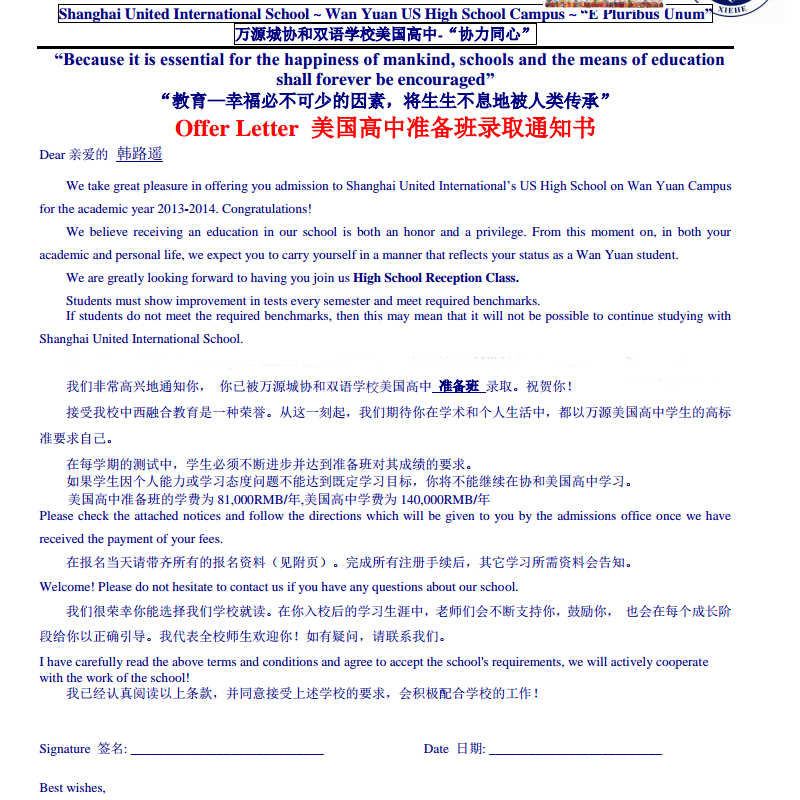
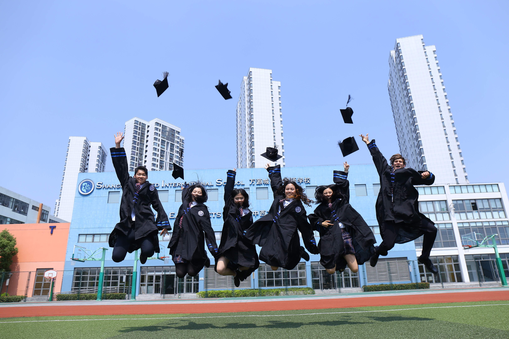
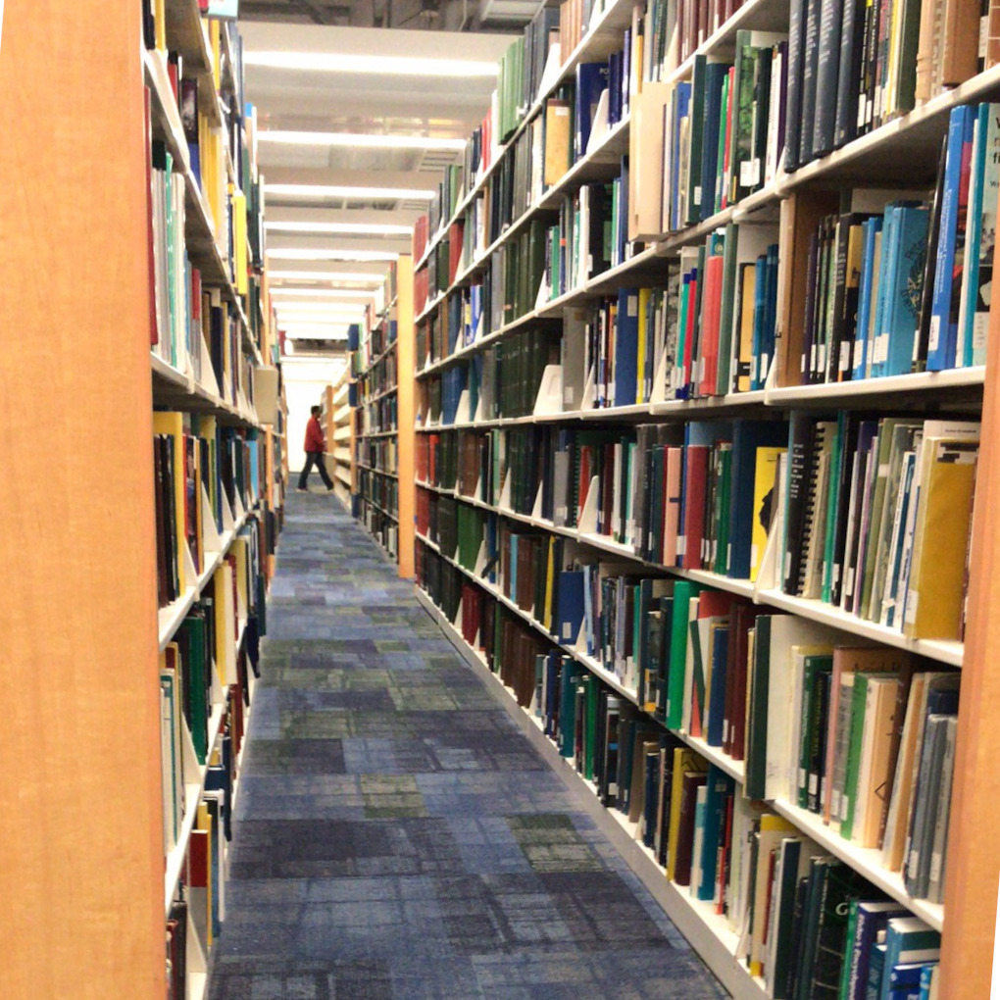
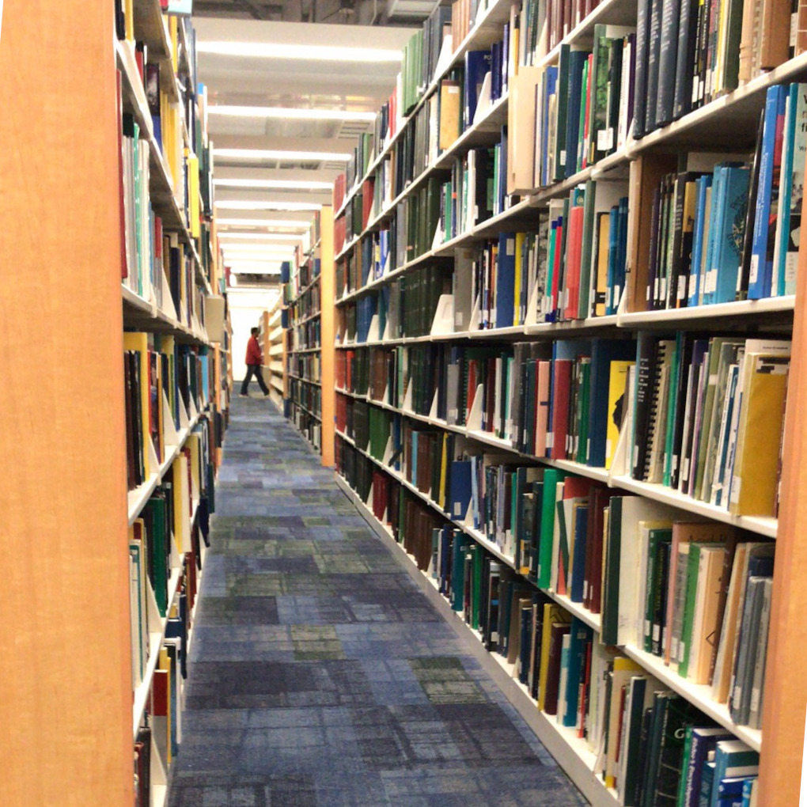
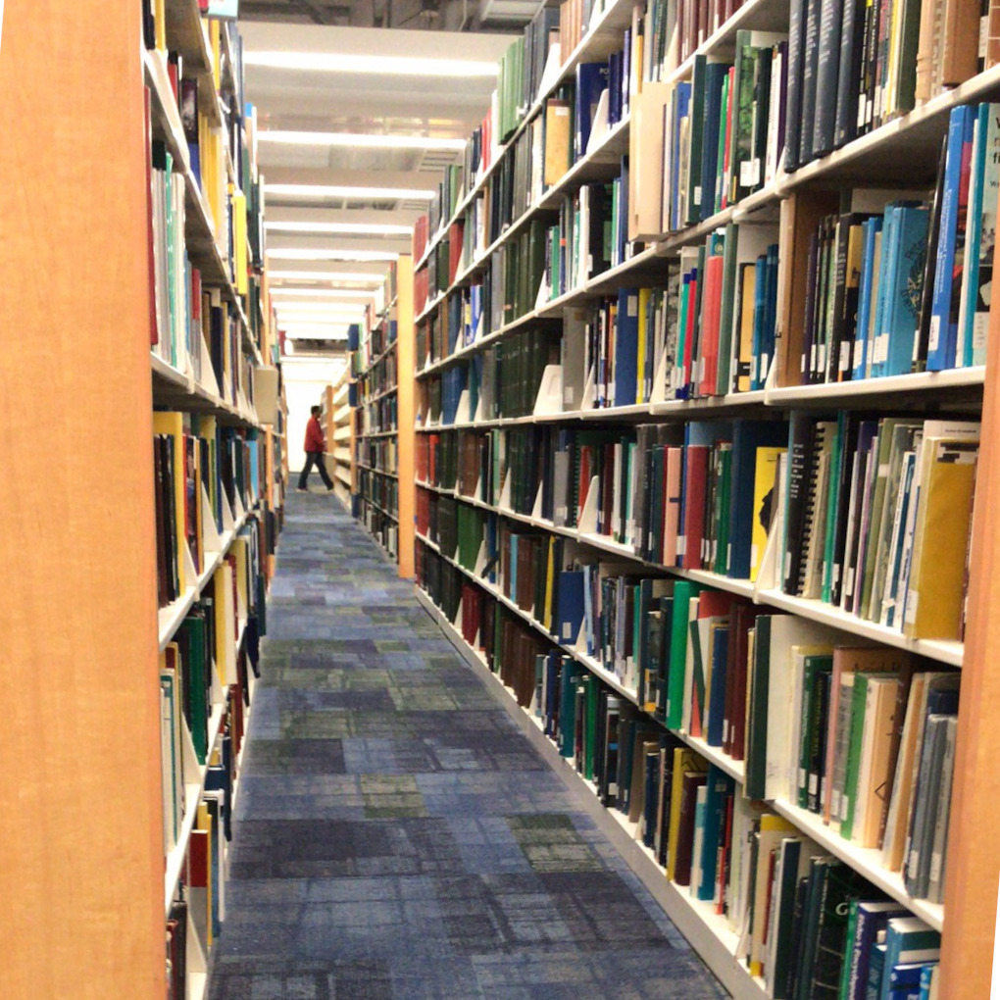

1999, I was born in East China, the city of Hangzhou.
Witnessing the economics' confident rise, the country soon pivoted its development around first-tier cities.
My parents had decided to move to the city of Shanghai for better opportunities, and more importantly, the education resources for their beloved children.
My story began from here.
Teenage.
In China, the primary school education provided rather tightly-packed curriculum that I constantly could not keep the pace up with my peers. I was simply never motivated.
I was the "mediocre kids" among the many. And you kind of had to be the best to get into a good college, then to live a good life -- typical Asian culture but largely a true statement in developing countries.
December 16th 2013, I got an admission letter from an international school that offered equivalent high school curriculum as those in the United States.
After some thoughtful discussions, my family and I decided that I shall pursue the journey.
That said, I was expected to earn a high school education enough to prepare for a U.S. college, deviating from what a normal student would experience at my age, and would take a path for higher education far away from home.
I was proud that I had been qualified as one of the few students who had done really well in the qualification exam.

High school was fun.
As the school advocated -- "WHERE EAST MEETS WEST".
Halloweens, Secret Santas, Pep Rally, Talent Show, Academic Debate, Musical Theaters. -- I truly appreciated such interesting cultural fusion.
I also got to know myself better. That, I was a true adherent of pragmatism. Now as a hindsight I realized that some signs were already been manifested that I could become an engineer sometime later.
There was a time that I programmed auditorium stage lighting console for the Talent Show entartaining more than 200 audiences. I liked being the "behind-the-scene" tech dude sitting there programming all day long. Yeah it is not a big deal, but it used to be a huge deal for someone mediocre as I once was.

The many virtues and personalities, jointly encouraged me into who I am today.
Those qualities are:
Passion, Grittiness, Resilience, Aspiration, and Curiosity.
September 3rd, 2017, I landed in the Los Angeles Airport.
Four years of exciting undergraduate study ahead, my study in the United States had formally began.
College.
The electrical engineering curriculum at UC Santa Barbara was composed of the lower-division and upper-dicision course sets.
The lower-division courses were fundamental, introdutory courses to prepare the student ready for advanced upper-division engineering courses with proper theory and mathematical foundations.
First year I took Calculus, Differential Equations, Vector Calculus, Problem Solving with C++, and many others.
Somophore year, I enjoyed and probably also hated the "10 Series", which was a whole year of continuous series for analog and digital circuits systems designs and analysis.
Out of curiosity and with many C programming experiences in the past, I naturally enrolled in other more advanced C++ courses on Data Structures and Algorithms, Object-Oriented Programmings and Software Architectures Courses.
Countless times -- either it was a deeply hiding bug existed in my program or an equation turned out broken in the homework. I still recall the many nights at when I stumbled on those hard problems I had faced.

More College.
Having realized that my intrinstic curiosity lied in the digital hardware and lower-level software domain, I changed my major from Electrical Engineering to Computer Engineering.
Well, the two majors had ~70% curriculum overlap except that I got to allocate more time to software side of the spectrum, and less semiconductor Physics.
In Junior and Senior year my curriculum had focused on Embedded Systems and Computer Architecture, which had interestingly became the solid concentration of my master study later.
Some more courses taken included Machine Learning, Computer Graphics, Contex Optimizaton, Fouriers and Signal Analysis and a tasteful selection of General Educations Courses.
What I had realized after taking these courses was that technality and a college degree were merely the fundamentals of fundamentals.
During the course training the most important qualities I had picked up was the ability to quickly ramp up onto an unsolved problem, produce an effective strategy incrementally, and gain confidence from tackling hard problems.
When I started to realize I would no longer be afraid of problems or failures, it meant I had gone through such cycles so many times and had already gained enough confidence. And I became an engineer.
Where did I see myself in a the forthcoming future?
After trying multiple research assistance positions in labs I had clearly shown poor enthusiasm towards becoming a researcher.
I did loved reading papers though closely related to the application field, the semiconductor industry had always been a divine place that I looked up to.
I interned at multiple companies and tried various things in different roles. And sure I was motivated!
In 2021 I moved to the city of Pittsburgh, a city on the East Coast of the United States.
Carnegie Mellon University was deemed one of the most respected institutions in the fields of computers-related studies, in the world.
My professional training at CMU were an orchestration of career-based curriculum, engineering courses with heavy focus aligned with my current interests in embedded systems.
I will be graduating on December 21 2022, with a Master of Science in Electrical and Computer Engineering, which would mark my college study.


 
